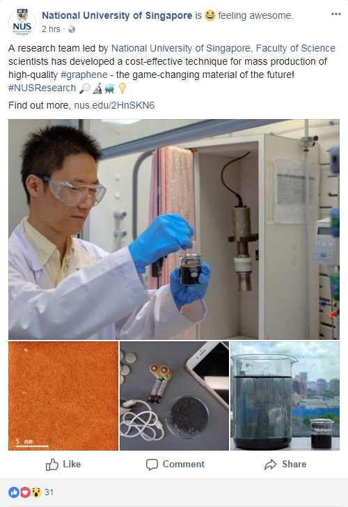

Congratulations!
Our paper Function-oriented synthesis of two-dimensional (2D) covalent organic frameworks–from 3D solids to 2D sheets is published in Chemical Society Reviews as cover. DOI: 10.1039/D0CS00236D

Congratulations!
Our Advanced Materials paper appeared as Frontispiece by editor's selection. Year: 2018, Volume: 30, Issue: 47, Pages: 1802397. https://onlinelibrary.wiley.com/doi/abs/10.1002/adma.201870360.
Congratulations!
Our Nature Communications paper on Two-dimensional tessellation by molecular tiles constructed from halogen–halogen and halogen–metal networks, by Dr Cheng Fang and team has been selected as Editor's choice - see
https://www.nature.com/collections/wtpqpqpgwd and https://www.nature.com/articles/s41467-018-07323-6.
Congratulations!
Our paper Graphene-Oxide-Catalyzed Direct CH-CH-Type Cross-Coupling: The Intrinsic Catalytic Activities of Zigzag Edges is published in Angewandte Chemie as Frontispiece. DOI: 10.1002/anie.201802548
Congratulations!
Our work on photocatalytic deuteration of halides has been highlighted by Angewandte Chemie (DOI: 10.1002/anie.201801541).
Congratulations!
Our group has collaborated with Fudan University to publish a non-dispersion strategy for large-scale production of ultra-high concentration graphene slurries in water in NATURE COMMUNICATIONS. doi:10.1038/s41467-017-02580-3
高质量石墨烯规模化水相制备， 复旦大学新闻
NUS-led research team develops cost effective technique for mass production of high-quality graphene NUS Press Release
Research highlight with pictures NUS Official Facebook post

Local researchers successfully developed new technique for mass production of graphene Capital 95.8FM
Scientists develops cost effective technique for mass production of high-quality graphene Tech Explorist
Research team develops cost-effective technique for mass production of high-quality graphene Phys. Org.
New method improves industrial viability of graphene production The Engineer
Research team develops cost effective technique for mass production of high-quality graphene Nanowerk
Congratulations!
Our team have made ultrastable and high capacity Organic Batteries from a mixture of π-Conjugated N-containing Heteroaromatic Molecule and Graphene. Work published in NATURE ENERGY. doi:10.1038/nenergy.2017.74
Detailed ex situ NMR has been carried out to track multielectron transfer reactions in the molecules!
New material --- Charges up Batteries, NUS News, Sep-Oct 2017, page 11

国大研究人员研发先进材料 可用来生产稳定性和容量超强电池, Capital Radio 95.8FM, Sep 2017
Researchers develop advanced material for ultra-stable, high capacity rechargeable batteries, Phys Org, Sep 2017
Researchers develop advanced material for ultra-stable, high capacity rechargeable batteries, New Electronics, Sep 2017
NUS researchers develop advanced material for ultra-stable, high capacity rechargeable batteries, Battery Power, Sep 2017
Congratulations!
Our team have developed a method to confine noble metal nanoparticles in layered, quasi-two-dimensional (2D) materials for efficient hydrogen production. Work published in NATURE COMMUNICATIONS DOI: 10.1038/ncomms14548 and featured by NUS Science Faculty. |